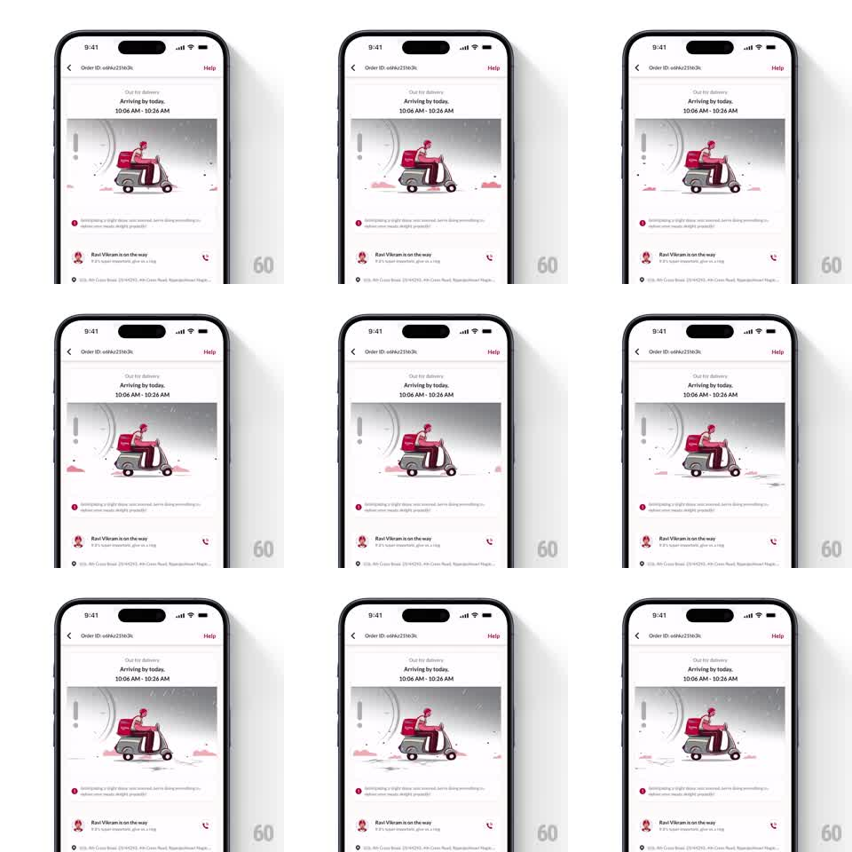

Media
Frame-by-frame

Rebuild this animation 1:1: Licious' out-for-delivery status - a looping illustration of a scooter rider bobbing through falling rain, wheels spinning, while a clock ticks the delivery window down.

Rebuild this animation 1:1: Licious' out-for-delivery status - a looping illustration of a scooter rider bobbing through falling rain, wheels spinning, while a clock ticks the delivery window down. ## Integration Integration: stack-agnostic spec - springs given as stiffness/damping, timed motions as duration + curve; map every value to your framework and animation library of choice. ## Scene Order tracking screen: order ID header, "Arriving by today, 10:06 AM - 10:26 AM" window, the delivery illustration card, a status line, and the rider's contact row. Motion lives in the illustration. ## Motion spec Pattern: delivery scene loop, ~2s. - The scooter and rider bob as if riding over bumps (+-4px vertical, ~500ms cycle, ease-in-out); both wheels spin continuously (~700ms per turn). - Rain streaks fall across the whole card at a slight slant (~15deg), each drop traveling in ~700ms, spawning staggered so the fall is constant. - The rider's box and scarf flutter subtly; small speed lines flicker behind the scooter. - The clock hand on the card's edge ticks forward once per second with a tiny overshoot (spring stiffness 400 damping 12). ## Calibration - The bob and the wheel spin are on different periods - synced motion reads as a toy. - Rain falls behind the scooter, never over the rider's face. ## Reduced motion Static illustration; the clock still ticks. ## Don't miss - The scooter stays pinned to its ground line - only the suspension bob moves, the wheels never leave the road. - The loop is seamless; there is no visible reset frame.